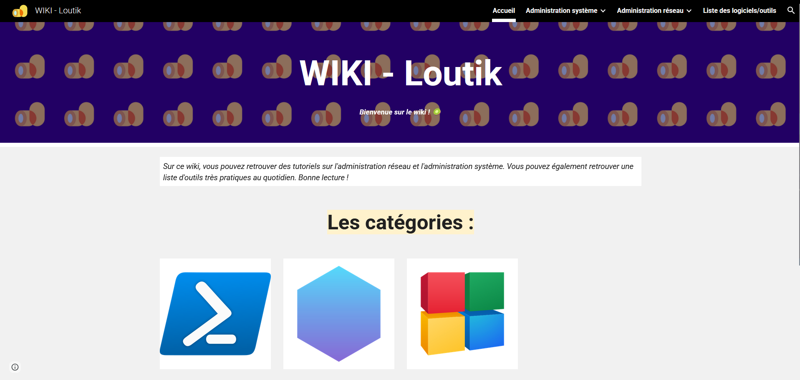

Projets

Traefik reverse proxy
Mise en place d'un reverse proxy avec Traefik pour gérer les requêtes HTTPS sur mon homelab.
Voir le projet

Étudiant en BTS SIO SISR
Je m'appelle Louis, passionné et autodidacte dans le domaine de l'administration système. Actuellement, je prépare un BTS SIO (Services Informatiques au Organisations) au lycée Paul Louis Courrier.
Je consacre la majeure partie de mon temps libre à me tenir informé des nouvelles technologies et à pratiquer pour développer de nouvelles compétences. J'ai également transformé un ordinateur de bureau Z440 en serveur chez moi, sous VMware ESXi, où je gère différentes machines virtuelles sous Linux pour des services tels qu'OpenVPN, Docker, Nextcloud, Traefik et de l'hébergement web.
Le BTS Services Informatiques aux Organisations est une formation en deux ans qui prépare aux métiers de l'informatique. Il propose deux spécialités distinctes, adaptées aux différents profils et aspirations professionnelles.
Stage - décembre 2024
Hutchinson / Joué-lès-Tours
Administration d'un serveur domestique Z440 sous VMware ESXi avec gestion de machines virtuelles Linux pour OpenVPN, Docker, Nextcloud, Traefik et hébergement web.
Stage - juin 2024
Hutchinson / Joué-lès-Tours
Administration d'un serveur domestique Z440 sous VMware ESXi avec gestion de machines virtuelles Linux pour OpenVPN, Docker, Nextcloud, Traefik et hébergement web.
Stage - février 2024
APB MULTIMEDIA / Tours
Administration d’un serveur domestique HP Z440 sous VMware ESXi, avec gestion de machines virtuelles Linux pour OpenVPN, Docker (via Portainer), Nextcloud, Traefik et hébergement web.
Lycée Paul Louis Courrier
2025-2027
Systèmes informatiques aux organisations option solutions d'infrastructure, systèmes et réseaux.
Lycée Henri Becquerel
2022-2025
Systèmes Numériques option Réseau Informatiques et Systèmes Communicants.
Mise en place d'un reverse proxy avec Traefik pour gérer les requêtes HTTPS sur mon homelab.
Voir le projet
Octobre 2025
EBIOS - Expression des Besoins et Identification des Objectifs de Sécurité.
Voir le certificat
Septembre 2025
ANSSI - Agence nationale de la sécurité des systèmes d'information.
Voir le certificat
Veille régulière sur l’actualité technologique et la cybersécurité.

Veille sur l’administration système, les solutions de sécurité et les procédures.
L'épreuve E5, intitulée « Administration des systèmes et des réseaux », est une épreuve orale de soutenance et d'échange qui porte sur le parcours de professionnalisation de l'étudiant dans le cadre de l'option SISR (Solutions d'Infrastructure, Systèmes et Réseaux).
Le tableau de synthèse est un document obligatoire qui récapitule l’ensemble des réalisations professionnelles effectuées par l’étudiant durant sa formation (stages, projets, TP significatifs, etc.).
Visualisez le tableau de synthèseL’épreuve E6, intitulée « Parcours de professionnalisation », vise à évaluer la capacité du candidat à mobiliser ses compétences techniques et professionnelles acquises tout au long de la formation en Solutions d’Infrastructure, Systèmes et Réseaux (SISR).